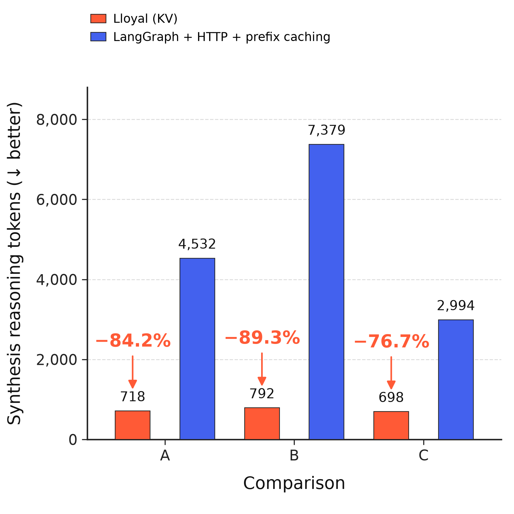
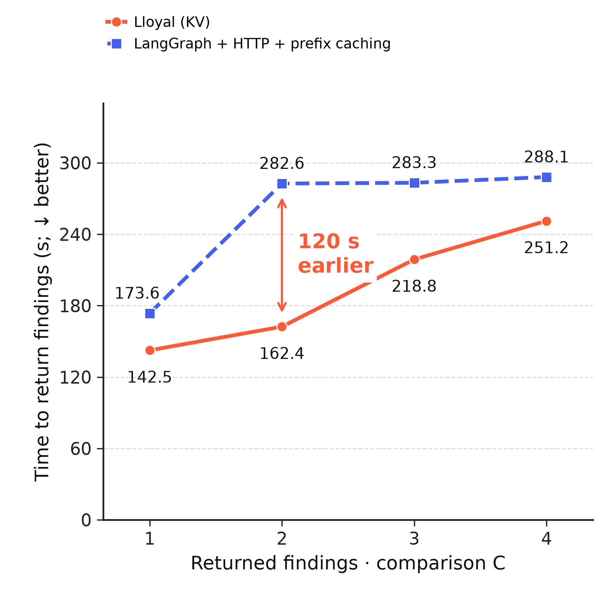
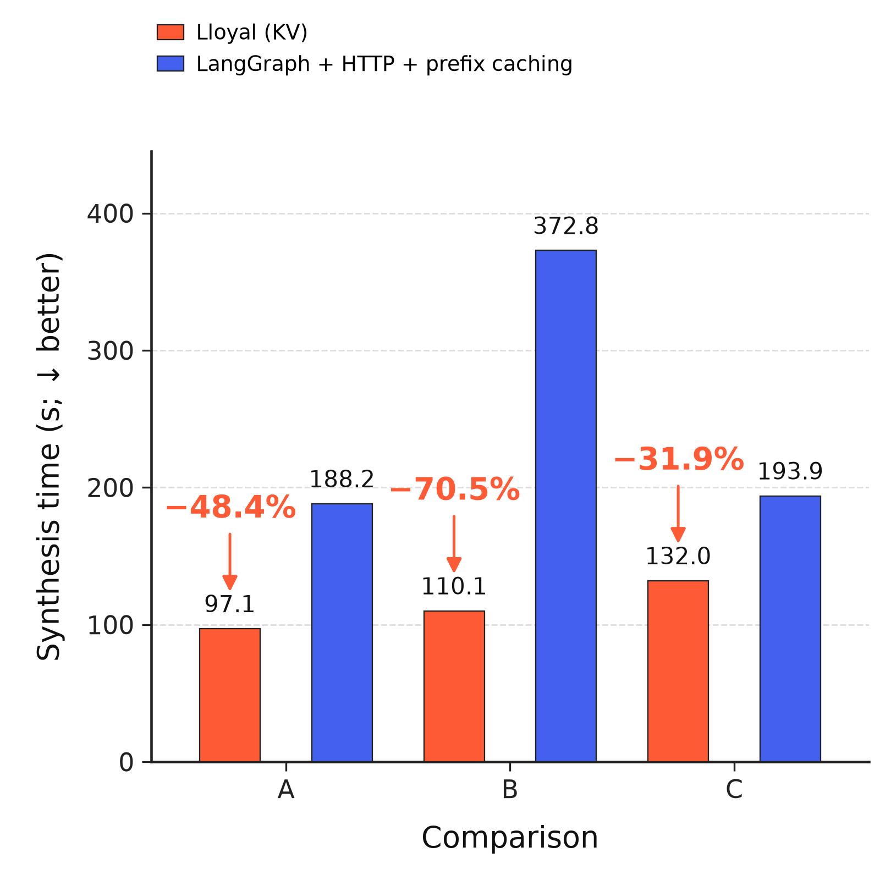

Less deliberation, earlier findings
The comparison starts at 4B parameters on the same model files and infrastructure. Both panels use raw measurements, with lower values indicating less reasoning or less waiting. The HTTP backend has prefix caching enabled.
76.7–89.3% fewer synthesis reasoning tokens

Three selected comparisons. Revised pair C produced approximately 964 words with Lloyal and 942 with LangGraph, using 698 versus 2,994 reasoning tokens. Counts use the same GGUF tokenizer; answer quality remains separately unverified.
The second finding arrives two minutes earlier

Revised pair C. The second finding arrived at 162.4 versus 282.6 seconds; all four arrived at 251.2 versus 288.1 seconds. Each agent counts once, including recoveries. The clock begins at research start, after preflight and plan review.
Exploratory selected runs across evolving conditions. Synthesis system instructions were byte-identical within each pair; full inputs differed and effective sampler parity is unverified. HTTP reused 44–59% of prompt positions across the workload, with zero synthesis cache hits. The shared-prefix synthesis control remains unmeasured. A’s findings arrived sooner initially but completed later; the full event table retains that mixed result.
Supporting synthesis timing bars
Synthesis took 31.9–70.5% less time across the selected pairs. This stage timing is related to the reasoning observation; total workflow time includes other stages.

Full README preview · README copy · Methods · All-pair return times · Peer presentation references